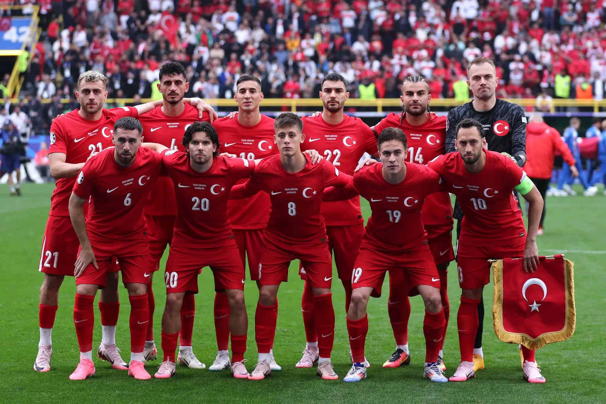

A Turquia fez sua primeira participação na Eurocopa em 1996, realizada na Inglaterra. Nessa edição, a Turquia foi eliminada na fase de grupos, sem conseguir avançar para as fases eliminatórias.

TÍTULOS
A Turquia ainda não conquistou nenhum título na Eurocopa. O melhor desempenho da seleção turca foi na edição de 2008, realizada na Áustria e na Suíça, quando chegaram às semifinais. Naquela ocasião, a Turquia foi eliminada pela Alemanha, perdendo por 3-2 em um emocionante jogo.
MELHORES MOMENTOS
A Turquia está classificada às quartas de final da Eurocopa 2024. Nesta terça-feira, 2, a seleção turca encarou a badalada Áustria e venceu por 2 a 1 em Leipzig. Os gols foram anotados pelo zagueiro Demiral, artilheiro da noite. Na próxima fase, a Turquia terá a Holanda pela frente.